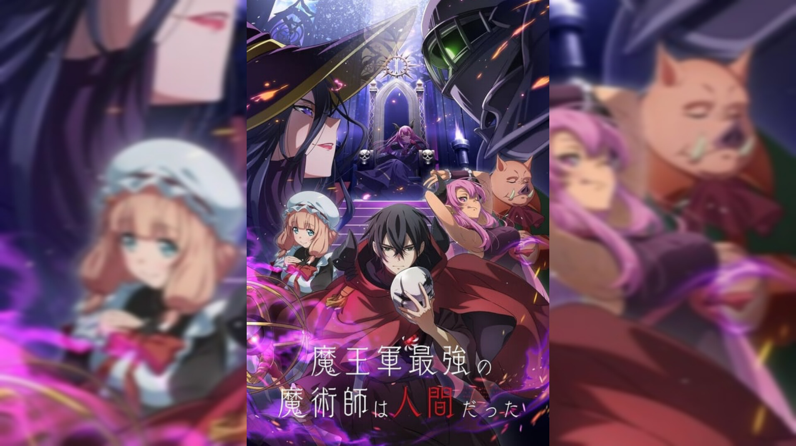

Smart, refined, and strikingly gorgeous, half-Russian half-Japanese Alisa Mikhailovna Kujou is considered the idol of her school. With her long silver hair, mesmerizing blue eyes, and exceptionally fair skin, she has captured the hearts of countless male students while being highly admired by all others. Even so, due to her seemingly unapproachable persona, everyone remains wary around the near-flawless girl. One of the few exceptions is Alisa's benchmate Masachika Kuze, a relatively average boy who spends his days watching anime and playing gacha games. Despite his nonchalant demeanor, Masachika is the sole student to receive Alisa's attention. Unable to be fully honest, Alisa is frequently harsh on Masachika and only expresses her affection in Russian. Unbeknownst to her, however, Masachika actually understands the language yet simply pretends otherwise for his own amusement. As the odd pair continues to exchange witty and playful remarks, their relationship gradually grows more romantic and delightful—and Alisa might finally learn to freely convey her true feelings.
The Strongest Magician in the Demon Lord's Army was a Human

"Maou Army’s strongest magician" I'm called. Ike, a demon capable of capturing a fort alone. Clearing away enemies with immense magic, he is without a doubt a monster awed by friend and foe. However he has a secret he can’t tell other demons. "I, actually I'm human you know." Using modern knowledge to keep his secret, he became treated as a great commander and the driving force of the Maou's army.
An adventure in another world with cute girls by your side and video game-like powers—sounds like an anime fan's dream, right? Not so for melancholic author Osamu Dazai, who would quite literally prefer to drop dead. Video games haven't even been invented yet when he gets yanked into another world in 1948. Really, all the fantastical adventure he keeps running into is just getting in the way of his poetic dream of finding the perfect place to die. But no matter how much he risks his hide, everything seems to keep turning out okay. Follow a miserable hero like no other in this cheerfully bleak isekai comedy!
Yuuta Asamura gets a new stepsister after his father remarries, Saki Ayase, who happens to be the number one beauty of the school year. They promise each other not to be too close, not to be too opposing, and to simply keep a vague and comfortable distance, having learned important values about men and women relationships from their parents' previous ones. Saki, who has worked alone for the sake of her family, doesn't know how to properly rely on others, whereas Yuuta is unsure of how to truly treat her. Standing on fairly equal ground, these two gradually learn the comfort of living together. Their relationship progresses from strangers to friends as the days pass. This is a story that may one day lead to love.